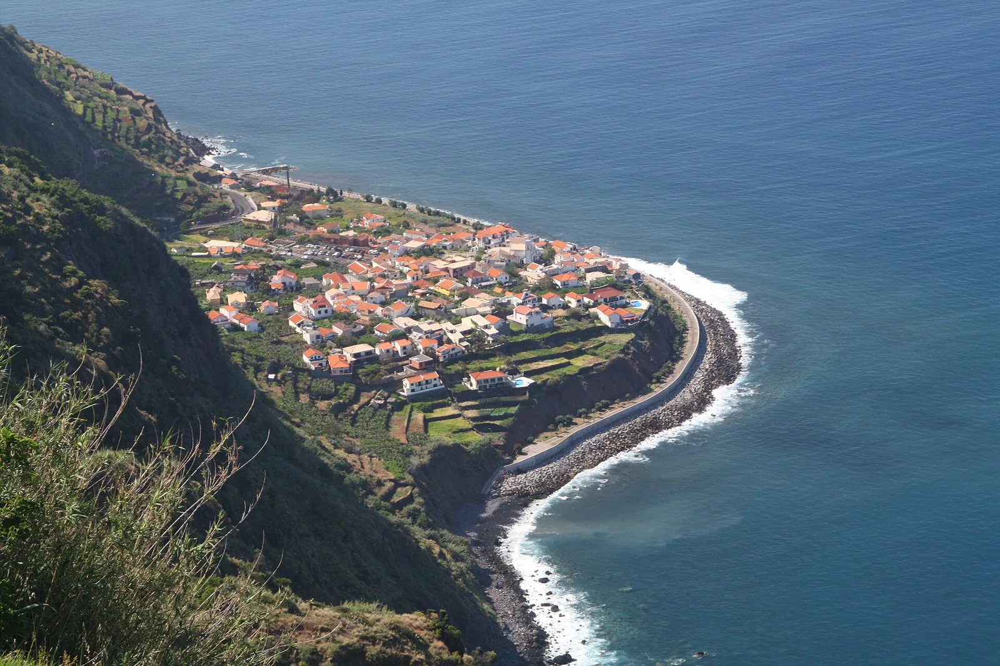

Jardim do Mar
Madère, Portugal · surf

Une droite de galets au pied de falaises vertigineuses, sur la côte sud-ouest de Madère. Vague longue et puissante, qui ne se réveille que par grosse houle d'Atlantique nord.
- Lieu
- Madère, Portugal
- Niveau
- Expert
- Activités
- surf
- Type d'eau
- Mer / océan
- Coordonnées
- 32.74, -17.20 (position approximative du secteur)
Dangers à connaître
- Entrée et sortie sur des galets roulants.
- Puissance élevée dès que la houle dépasse 2 m.
- Falaises : chutes de pierres possibles après la pluie.
Le conseil d'Ocean Buddy
Repère le point de sortie avant d'entrer : sur les galets, sortir est plus dur qu'entrer.
Ouvrir dans Ocean Buddy Télécharger sur l'App Store
Source : Description historique Ocean Buddy · vérification externe en attente.